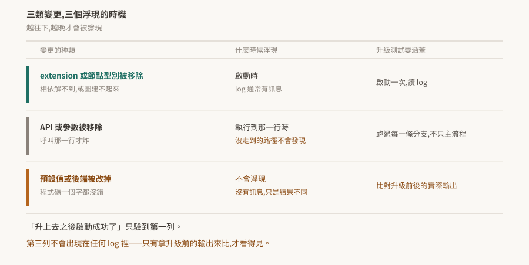

11 · 從 Kit 107 升到 110:官方列出的移除與棄用
升級最貴的部分不是改壞掉的那幾行,是不知道哪幾行會壞。
這篇整理官方 release notes 明列的移除與棄用項,以及一件比清單本身更重要的事:這三類變更浮現的時機不同,而只有第一類會在啟動時被抓到。

驗證狀態:§2、§3 逐字引自官方 release notes,每條帶官方的 issue 編號。本 repo 沒有 Kit 環境,未實機驗證任何一條。§4 是把這些變更接回失效形狀的分析,§6 是待驗清單。
1. 中間沒有 108
版本號從 107 直接跳到 110。109 只出現在 Isaac Sim 6.0 的早期開發版(Kit 109.0.2),沒有對應的正式產品線;108 不存在。
看到不連續不用回頭找。對應關係見 version-matrix。
2. 官方列出的移除
Kit 110.0 release notes 明列的移除項:
| 子系統 | 移除了什麼 | 官方編號 |
|---|---|---|
| Foundation | "Removed previously deprecated unsafe string methods from ITokens." |
OMPE-56022 |
| Kit SDK | "The legacy menu_compatibility parameter is removed from ui.Menu and ui.Separator." |
OMPE-69110 |
| Kit SDK | settings widget 的既有棄用程式碼「has been removed. Extensions using omni.kit.widget.settings.deprecated must migrate to the current API.」 |
OMPE-59133 |
| OmniGraph | "The DeformedPointsToHydra node is removed as part of OmniHydra deprecation." |
OMPE-69458 |
| RTX | "Previously deprecated multi-node rendering support and related networking code are removed." | OMPE-67531 |
| USD Core | "Hydra 2 rendering backend is disabled." | OMPE-68552 |
另外一條屬於更早的變動,但升級時同樣會撞到:omni.kit.window.viewport 在 Kit 106 標為 deprecated,到 107 已從 SDK 移除。針對 106 寫的程式碼直接跳到 110,會先在這裡斷掉。
3. 官方列出的棄用
棄用還能用,但下一版可能就不能:
| 子系統 | 棄用了什麼 | 官方編號 |
|---|---|---|
| Foundation | "IFileSystem raw char* methods are deprecated in favor of new safe string-based alternatives." |
OMPE-57069 |
| Kit SDK | "omni.renderer_capture is deprecated. Use alternative capture APIs instead." |
OMPE-71542 |
| OmniGraph | "The bundle attributes on omni.graph.action.OnCustomEvent are deprecated. Use the non-bundle equivalents instead." |
OMPE-72264 |
omni.renderer_capture 這條對做離線算圖或自動截圖的流程影響最直接——那類腳本通常不在互動測試的路徑上,升級時容易漏掉。
4. 三類變更,三個浮現時機
清單本身只是原料。真正決定升級測試該怎麼做的,是這些變更什麼時候才會被發現。
| 變更的種類 | 什麼時候浮現 | 升級測試要涵蓋 |
|---|---|---|
| extension 或節點型別被移除 | 啟動時,log 通常有訊息 | 啟動一次,讀 log |
| API 或參數被移除 | 執行到那一行時;沒走到的路徑不會發現 | 跑過每一條分支,不只主流程 |
| 預設值或後端被改掉 | 不會浮現,沒有訊息,只是結果不同 | 比對升級前後的實際輸出 |
對照 §2 的清單:DeformedPointsToHydra 節點移除屬第一類——圖裡用到它就建不起來,而 05 §5 的節點型別查詢抓得到。menu_compatibility 與 ITokens 的字串方法屬第二類,要走到那行才炸。「Hydra 2 rendering backend is disabled」屬第三類——沒有人會報錯,只是算出來的東西可能不一樣。
由此得到一條升級紀律:
「升上去之後啟動成功了」只驗到第一列。
第三類完全不會出現在任何 log 裡,只有拿升級前的輸出來比才看得見。這與 07 §6 是同一件事——輸出的每一項參數都正常,錯的只有內容。
5. 升級前後該做的
把 §4 落成動作:
- [ ] 升級前先留基準。 同一組輸入在 107 上跑一次,把輸出存起來(算圖結果、log、關鍵數值)。升完才想到要比就來不及了。
- [ ] 啟動一次讀 log,找相依解析與節點型別的錯誤(第一類)
- [ ] 跑過每一條分支,包含離線算圖、批次腳本這種不在互動路徑上的(第二類)
- [ ] 拿基準比對輸出(第三類)
- [ ] 順手處理 §3 的棄用項——它們現在還能動,但拖到下一版就變成第二類
- [ ] 版本釘選確認過(10 §4),避免升級與版本漂移兩件事混在一起查
倒數第二項容易被跳過,理由通常是「還能跑」。代價是下一次升級時,要同時處理兩版累積的棄用。
6. 待驗清單
| # | 待驗的斷言 | 怎麼驗 | 什麼算通過 |
|---|---|---|---|
| 1 | §2 各條在 110 上確實不存在 | 逐條寫最小重現,在 110 上跑 | 各自以官方描述的方式失敗 |
| 2 | DeformedPointsToHydra 移除後圖建不起來(§4 第一類) |
在 110 上開一個用到該節點的圖 | 建圖失敗且 log 有訊息 |
| 3 | Hydra 2 停用是否改變算圖輸出(§4 第三類) | 同一場景在 107 與 110 各算一張,逐像素比對 | 有差異則確認屬第三類 |
| 4 | §3 的棄用項仍可用 | 在 110 上呼叫,看是否只有警告 | 能動且 log 有 deprecation 訊息 |
| 5 | omni.kit.window.viewport 在 107 已不存在 |
在 107 上嘗試啟用 | 找不到該 extension |
第 3 條最值得做:它是唯一一條沒有任何錯誤訊息可依靠的,也是升級驗證最容易漏掉的一類。做完可以回頭補強 §4 那張表。